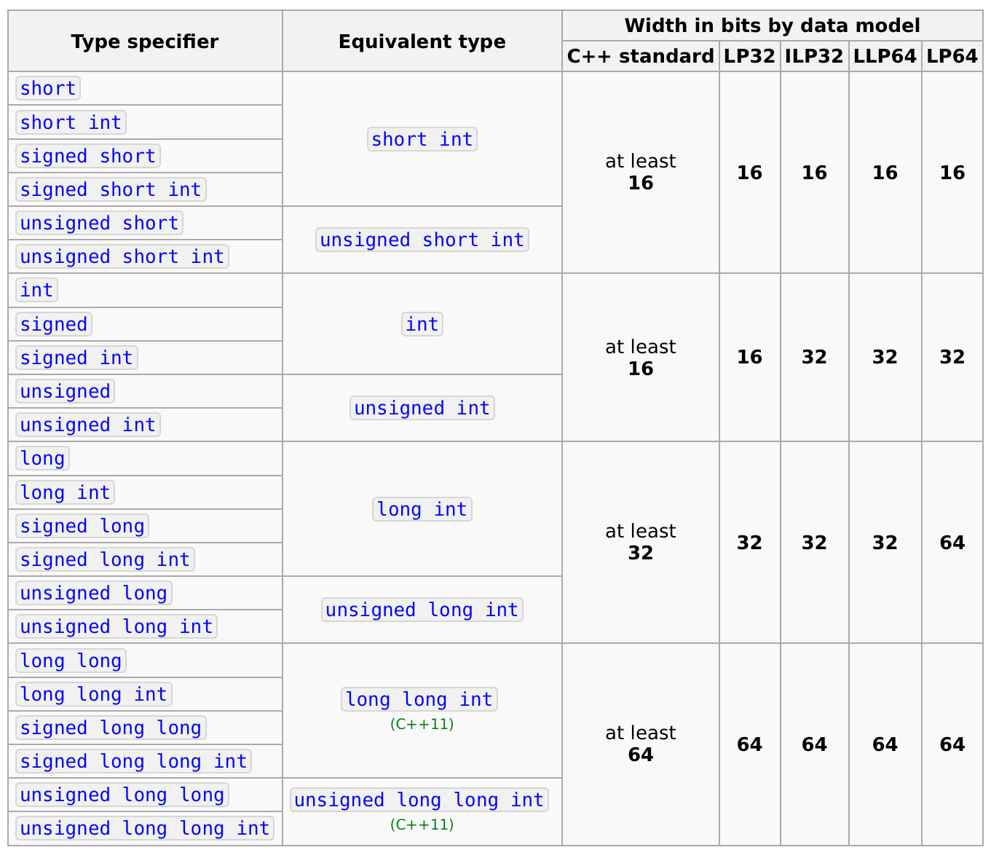
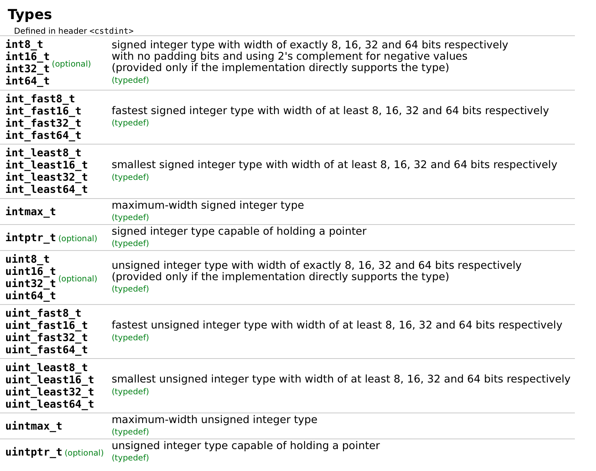

CxxWrap.jl
Julia and C++: a technical overview of CxxWrap.jl
What is CxxWrap?
- Package for using C++ libraries in Julia
- Library-based approach
- Compile a C++ "wrapper" library
- Distribute using BinaryBuilder / Yggdrasil
- Inspired by Boost.Python and pybind11
- Non-interactive, use Cxx.jl for that
- Some tools for using Julia in C++
- Wrappers for standard library containers
Demo
C++ Code exposing class Foo
#include <jlcxx/jlcxx.hpp>
class Foo
{
public:
Foo(int i = 0) : m_value(i) {} // Constructor
int add(int i) const { return m_value + i; } // Member function
private:
int m_value; // Private data
};
JLCXX_MODULE define_julia_module(jlcxx::Module& mod)
{
mod.add_type<Foo>("Foo")
.constructor<int>()
.method("add", &Foo::add);
}
Usage from Julia
module LibFoo
using CxxWrap
@wrapmodule "libfoo/build/lib/libfoo"
function __init__()
@initcxx
end
export Foo, add
end
julia> using .LibFoo
julia> f = Foo(3)
Main.LibFoo.FooAllocated(Ptr{Nothing} @0x00000000021c9860)
julia> add(f,1)
4
Calling C++ functions
A quick ccall reminder
int foo(int a, int b) { return a + b; }
Compile using e.g:
clang -shared -o libfoo.dylib foo.c
Use in Julia:
julia> ccall((:foo, "libfoo"), Cint, (Cint,Cint), 1, 2)
3
That was easy! Let's try C++!
int foo(int a, int b) { return a + b; }
Compile using e.g:
clang++ -shared -o libfoocpp.dylib foo.cpp
Use in Julia:
julia> ccall((:foo, "libfoocpp"), Cint, (Cint,Cint), 1, 2)
ERROR: could not load symbol "foo":
dlsym(0x7fa0c8c4eef0, foo): symbol not found
Stacktrace:
[1] top-level scope at ./REPL[1]:1
C++ name mangling
nm -gU libfoo.dylib
0000000000000fa0 T _foo
nm -gU libfoocpp.dylib
0000000000000fa0 T __Z3fooii
julia> ccall((:_Z3fooii, "libfoocpp"), Cint, (Cint,Cint), 1, 2)
3
(Un)fortunately this is not portable
Alternative ccall sequence
julia> using Libdl
julia> fooptr = dlsym(dlopen("libfoo"), :foo)
Ptr{Nothing} @0x000000010f5d3fa0
julia> ccall(fooptr, Cint, (Cint,Cint), 1, 2)
3
Exploiting this to call c++ functions
#include <vector>
int foo(int a, int b) { return a + b; }
// Filled using registration functions
std::vector<void*> registered_functions = {reinterpret_cast<void*>(foo)};
extern "C" {
void* getfunction(int function_idx)
{
return registered_functions[function_idx];
}
}
julia> fooptr = ccall((:getfunction, "libfoocpp"), Ptr{Cvoid}, (Cint,), 0)
Ptr{Nothing} @0x0000000126f79cc0
julia> ccall(fooptr, Cint, (Cint,Cint), 1, 2)
3
Additional complications
- Type conversions
- Member functions
- Lambdas
- Exceptions
Solution: use std::function
#include <functional>
class Foo
{
public:
int foo(int a, int b) { return a+b; }
};
int main()
{
std::function<int(Foo&, int, int)> f([] (Foo& foo, int a, int b)
{
return foo.foo(a,b);
});
Foo myfoo;
int result = f(myfoo, 1, 2);
return 0;
}
Solution: use std::function
template<typename R, typename... Args>
struct CallFunctor
{
// ... skipping horrible stuff to compute return_type
static return_type apply(const void* function,
static_julia_type<Args>... args)
{
try
{
auto std_func =
reinterpret_cast<const std::function<R(Args...)>*>(function);
return convert_to_julia((*std_func)(convert_to_cpp<Args>(args)...));
}
catch(const std::exception& err)
{
jl_error(err.what());
}
}
};
Type mapping
Fundamental types
- Can map directly to Julia equivalents, e.g:
double↔Float64void*↔Ptr{Cvoid}- Goes for integers as well, but...
Integers in C++
Fixed-size integers in C++
Choices had to be made 😰
Mac
char -> CxxChar
int -> Int32
unsigned int -> UInt32
long -> CxxLong
unsigned long -> CxxULong
long long -> Int64
unsigned long long -> UInt64
int32_t -> Int32
uint32_t -> UInt32
int64_t -> Int64
uint64_t -> UInt64
Linux 64 bit
char -> CxxChar
int -> Int32
unsigned int -> UInt32
long -> Int64
unsigned long -> UInt64
long long -> CxxLongLong
unsigned long long -> CxxULongLong
int32_t -> Int32
uint32_t -> UInt32
int64_t -> Int64
uint64_t -> UInt64

Other types
C structs map directly, e.g:
C and C++
struct Foo {
void* p;
};
Julia
struct Foo
p::Ptr{Cvoid}
end
The pointer can be any C++ object, so we use this a lot!
Adding types
Type creation mechanism
- The call
add_typereally creates three typesmod.add_type<Foo>("Foo");- Base type:
abstract type Foo end - Allocated type:
mutable struct FooAllocated <: Foo cpp_object::Ptr{Cvoid} end - Dereferenced type:
struct FooDereferenced <: Foo cpp_object::Ptr{Cvoid} end
- Base type:
References and pointers
We need distinct types for T*, const T*, T&, const T&
abstract type CxxBaseRef{T} <: Ref{T} end
struct CxxPtr{T} <: CxxBaseRef{T}
cpp_object::Ptr{T}
end
struct ConstCxxPtr{T} <: CxxBaseRef{T}
cpp_object::Ptr{T}
end
struct CxxRef{T} <: CxxBaseRef{T}
cpp_object::Ptr{T}
end
struct ConstCxxRef{T} <: CxxBaseRef{T}
cpp_object::Ptr{T}
end
Example
class Foo
{
public:
Foo(int i = 0) : m_value(i) {}
int add(int i) const { return m_value + i; } // Member function
Foo* thisptr() { return this; }
Foo& thisref() { return *this; }
Foo thiscopy() { return *this; }
const int* valueptr() { return &m_value; }
private:
int m_value;
};
Example
julia> f = Foo(2)
Main.LibFoo.FooAllocated(Ptr{Nothing} @0x0000563768a76130)
julia> thiscopy(f)
Main.LibFoo.FooAllocated(Ptr{Nothing} @0x0000563768149440)
julia> thisref(f)
CxxWrap.CxxWrapCore.CxxRef{Foo}(Ptr{Foo} @0x0000563768a76130)
julia> thisptr(f)
CxxWrap.CxxWrapCore.CxxPtr{Foo}(Ptr{Foo} @0x0000563768a76130)
julia> thisref(f)[]
Main.LibFoo.FooDereferenced(Ptr{Nothing} @0x0000563768a76130)
julia> thisptr(f)[]
Main.LibFoo.FooDereferenced(Ptr{Nothing} @0x0000563768a76130)
julia> add(thisref(f), 2)
4
julia> valueptr(f)
CxxWrap.CxxWrapCore.ConstCxxPtr{Int32}(Ptr{Int32} @0x0000563768a76130)
julia> valueptr(f)[]
2
Caveat: object lifetime
This is fine, right?
julia> function usefoo()
f = Foo(2)
valptr = valueptr(f)
return valptr[]
end
usefoo (generic function with 1 method)
julia> usefoo()
2
Caveat: object lifetime
Not quite...
julia> function usefoo()
f = Foo(2)
valptr = valueptr(f)
for i in 1:100
f2 = Foo(rand(100:200))
end
GC.gc()
return valptr[]
end
usefoo (generic function with 1 method)
julia> usefoo()
-1899136832
Caveat: object lifetime
Use GC.@preserve
julia> function usefoo()
f = Foo(2)
valptr = valueptr(f)
GC.@preserve f return valptr[]
end
usefoo (generic function with 1 method)
julia> usefoo()
2
Adding Julia methods to C++ types
We can add methods in the normal way:
module LibFoo
using CxxWrap
@wrapmodule "libfoo/build/lib/libfoo"
function __init__()
@initcxx
end
function extendedadd(a::Foo, b::Foo)
return valueptr(a)[] + valueptr(b)[]
end
export Foo, add, thisptr, thisref, thiscopy, valueptr
end
julia> a = Foo(1)
julia> b = Foo(2)
julia> extendedadd(a,b)
3
Problem with references:
julia> extendedadd(thisref(a), b)
ERROR: MethodError: no method matching
extendedadd(::CxxWrap.CxxWrapCore.CxxRef{Foo}, ::Main.LibFoo.FooAllocated)
Closest candidates are:
extendedadd(::Foo, ::Foo) at /Users/bjanssens/CloudStation/projects/julia/juliacon/2020/cxxwrap-talk/examples/Foo.jl:11
Stacktrace:
[1] top-level scope at REPL[7]:1
Problem with references and pointers
- Add methods?
extendedadd(a::CxxRef{Foo}, b::Foo)extendedadd(a::Foo, b::CxxRef{Foo})extendedadd(a::CxxRef{Foo}, b::::CxxRef{Foo}) - 😭
Secret wish 🙏
abstract type AbstractCxxRef{T} <: T endThe @cxxdereference macro
module LibFoo
using CxxWrap
@wrapmodule "libfoo/build/lib/libfoo"
function __init__()
@initcxx
end
@cxxdereference function extendedadd(a::Foo, b::Foo)
return valueptr(a)[] + valueptr(b)[]
end
export Foo, add, thisptr, thisref, thiscopy, valueptr, extendedadd
end
The @cxxdereference macro
julia> extendedadd(thisref(a),b)
3
julia> methods(extendedadd)
# 1 method for generic function "extendedadd":
[1] extendedadd(a::Union{CxxWrap.CxxWrapCore.CxxBaseRef{Foo},
CxxWrap.CxxWrapCore.SmartPointer{Foo},
Foo},
b::Union{CxxWrap.CxxWrapCore.CxxBaseRef{Foo},
CxxWrap.CxxWrapCore.SmartPointer{Foo},
Foo}) in Main.LibFoo
julia> @macroexpand @cxxdereference function extendedadd(a::Foo, b::Foo) return valueptr(a)[] + valueptr(b)[] end
:(function extendedadd(a::(CxxWrap.CxxWrapCore).reference_type_union(Foo), b::(CxxWrap.CxxWrapCore).reference_type_union(Foo); )
#= /home/bjanssens/.julia/packages/CxxWrap/ZOkSN/src/CxxWrap.jl:787 =#
a = (CxxWrap.CxxWrapCore).dereference_argument(a)
b = (CxxWrap.CxxWrapCore).dereference_argument(b)
#= REPL[9]:2 =#
return (valueptr(a))[] + (valueptr(b))[]
end)
dereference_argument(x) = x
dereference_argument(x::CxxBaseRef) = x[]
dereference_argument(x::SmartPointer) = x[]
C++ Standard Library
Standard library support
- Support for:
- Strings
std::vector- Smart pointers
- Wrapped using CxxWrap itself
- Work-in-progress, relatively easy to extend
Usage example
#include <jlcxx/jlcxx.hpp>
#include <jlcxx/stl.hpp>
// ...
JLCXX_MODULE define_julia_module(jlcxx::Module& mod)
{
mod.add_type<Foo>("Foo")
//...
mod.method("sumfoos", [] (const std::vector<Foo>& vec)
{
int result = 0;
for (auto foo : vec)
{
result += *foo.valueptr();
}
return result;
});
}
Usage example
julia> foo_vec = StdVector(Foo.(1:10000));
julia> foo_vec[1]
Main.LibFoo.FooDereferenced(Ptr{Nothing} @0x000000000198d250)
julia> sumfoos(foo_vec)
50005000
Implementation
Module definition:
JLCXX_MODULE define_cxxwrap_stl_module(jlcxx::Module& stl)
{
jlcxx::stl::wrap_string(stl.add_type<std::string>("StdString", julia_type("CppBasicString")));
jlcxx::stl::wrap_string(stl.add_type<std::wstring>("StdWString", julia_type("CppBasicString")));
jlcxx::add_smart_pointer<std::shared_ptr>(stl, "SharedPtr");
jlcxx::add_smart_pointer<std::weak_ptr>(stl, "WeakPtr");
jlcxx::add_smart_pointer<std::unique_ptr>(stl, "UniquePtr");
jlcxx::stl::StlWrappers::instantiate(stl);
}
Module definition continued:
JLCXX_API void StlWrappers::instantiate(Module& mod)
{
m_instance.reset(new StlWrappers(mod));
m_instance->vector.apply_combination<std::vector, stltypes>(
stl::WrapVector());
m_instance->valarray.apply_combination<std::valarray, stltypes>(
stl::WrapValArray());
smartptr::apply_smart_combination<std::shared_ptr, stltypes>(mod);
smartptr::apply_smart_combination<std::weak_ptr, stltypes>(mod);
smartptr::apply_smart_combination<std::unique_ptr, stltypes>(mod);
}
Module definition continued:
JLCXX_API StlWrappers::StlWrappers(Module& stl) :
m_stl_mod(stl),
vector(stl.add_type<Parametric<TypeVar<1>>>(
"StdVector", julia_type("AbstractVector"))),
valarray(stl.add_type<Parametric<TypeVar<1>>>(
"StdValArray", julia_type("AbstractVector")))
{
}
Module definition continued:
struct WrapVector
{
template<typename TypeWrapperT>
void operator()(TypeWrapperT&& wrapped)
{
using WrappedT = typename TypeWrapperT::type;
using T = typename WrappedT::value_type;
wrapped.module().set_override_module(StlWrappers::instance().module());
wrapped.method("cppsize", &WrappedT::size);
wrapped.method("resize", [] (WrappedT& v, const cxxint_t s) {
v.resize(s);
});
wrapped.method("append", [] (WrappedT& v, jlcxx::ArrayRef<T> arr)
{
const std::size_t addedlen = arr.size();
v.reserve(v.size() + addedlen);
for(size_t i = 0; i != addedlen; ++i)
{
v.push_back(arr[i]);
}
});
wrapped.module().unset_override_module();
}
};
Hook to add a type on the fly:
template<typename T>
inline void apply_stl(jlcxx::Module& mod)
{
TypeWrapper1(mod, StlWrappers::instance().vector)
.apply<std::vector<T>>(WrapVector());
TypeWrapper1(mod, StlWrappers::instance().valarray)
.apply<std::valarray<T>>(WrapValArray());
}
Julia side: implement interfaces
Base.IndexStyle(::Type{<:StdVector}) = IndexLinear()
Base.size(v::StdVector) = (Int(cppsize(v)),)
Base.getindex(v::StdVector, i::Int) = cxxgetindex(v,i)[]
function Base.setindex!(v::StdVector{T}, val, i::Int) where {T}
cxxsetindex!(v, convert(T,val), i)
end
Adding new STL container types
- Some complexity is unavoidable
- See commit 47a760f for a diff to add
std::valarray
Wrap-up
- API mostly stable
- Good BinaryBuilder integration
- Need to add more STL types
- Better support for native compilers?